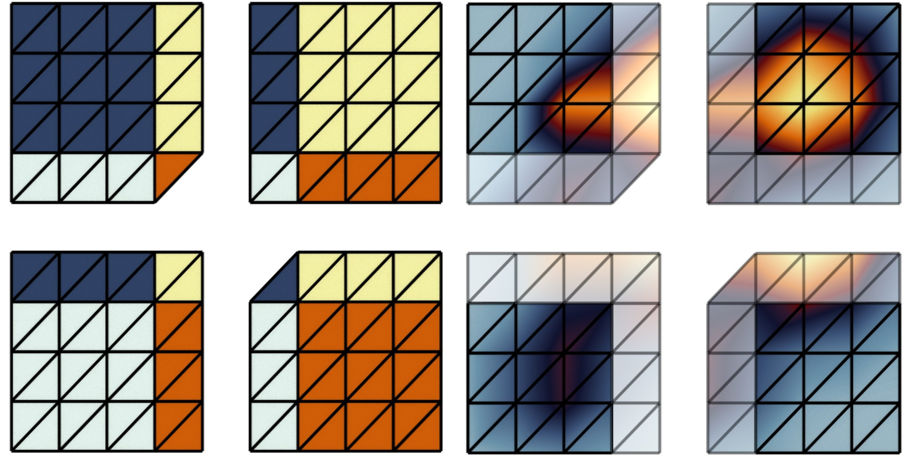

Le Guillou


PhD candidate
Computer Science
Sorbonne Université (LIP6), Université de Lille (CRIStAL)
eve dot le-guillou at lip6 dot fr
About
I am currently a PhD student, since April 2022, at Sorbonne Université (LIP6) and Université de Lille (CRIStAL) within the TORI project.
My thesis focuses on topological data analysis at scale, especially the port of such algorithms to the MPI distributed-memory model, under the direction of Julien Tierny and Pierre Fortin.
I received a M.S. degree in 2020 in Computer Science from Cranfield University, in the "Software Engineering for Technical Computing" track, as well as an engineering degree in 2021 from Ecole Centrale de Lille in the "Data Science and Artificial Intelligence" track.
Latest Publication
|  |
TTK is Getting MPI-Ready Eve Le Guillou, Michael Will, Pierre Guillou, Jonas Lukasczyk, Pierre Fortin, Christoph Garth, Julien Tierny IEEE Transactions on Visualization and Computer Graphics. To be presented at IEEE VIS 2024. Paper Code Replicability Stamp |
|